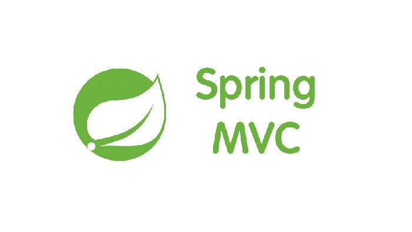
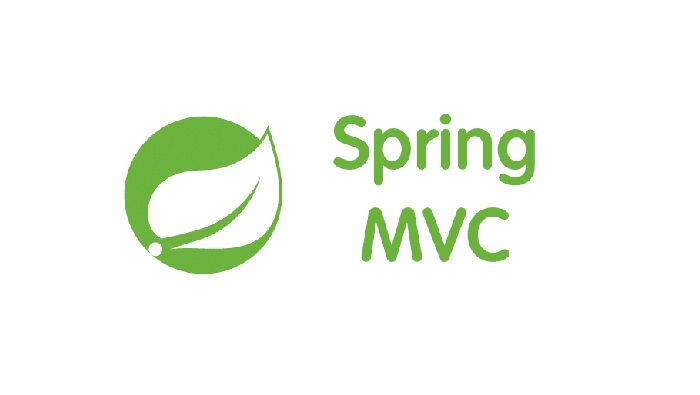
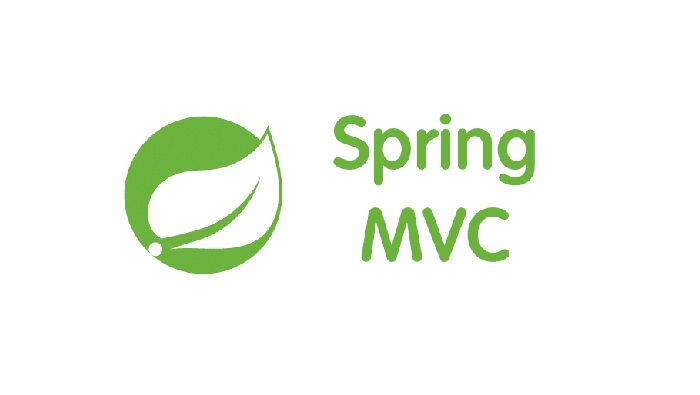

Skills ▼


 



LinkedIn | +91 9623323755 | nikitabodke262@gmail.com | GitHub

• Developed a web application for NAV calculation for Mutual Funds.
• Boosted code coverage from 30% to 50% by implementing Junit test cases and MOCKITO for Test-Driven development( TDD) having strong unit and integration testing.
• Improved codebase quality using SonarQube, reducing complexity by 15%, cutting duplication by 20%, and elevating maintainability.
• Utilized Log4J for effective logging, debugging, and management of warning information on the server console, with exception handling within continuous integration and continuous delivery tools.
• Directed successful deployments, securing a 15% increase in system stability throughout UAT and Production using version control systems GIT.
• Crafted front-end interfaces using HTML5, CSS3, JavaScript, and Angular JS, demonstrating UI design expertise.
• Engineered Java for backend development, applying Agile SCRUM for seamless software lifecycle management, optimizing server response time by 10%.
• Spearheaded collaborative efforts with cross-functional teams for issue resolution, ensuring process functionality, efficiency, achieved a 20% improvement in operational performance metrics through enhanced problem-solving and strategic collaboration.

• Facilitated the transition from 4G to 5G technology by crafting a web application for documenting features, ensuring adherence to federal laws and boosting telecommunications infrastructure.
• Increased operational efficiency by 20% through automating relational database operations, executing over 200+ CRUD operations, and creating 20+ triggers, 10+ procedures and SQL queries to streamline data management processes.
• Launched over 30+ Spring RESTful Web Services - APIs, by enabling POST, GET, PUT, and DELETE operations using open source framework Spring Cloud Components like – Eureka, Zuul, Ribbon achieved through stakeholder engagement.
• Experienced in integrating third-party services and developing secure REST APIs using microservice and SpringBoot.
• Proficient in JAVA 8, Exception Handling, Collection API, Functional Interfaces, Lambda Expressions, and Stream API.
Bachelor of Engineering - Pune Institute of Computer Technology (08/2017 - 07/2021)
Electrical and Telecommunication Engineering – 9.14/10